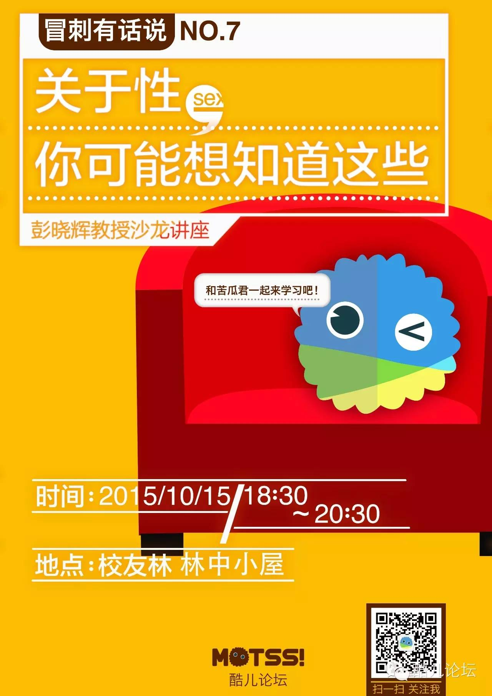
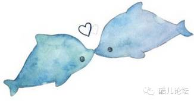

关于性，你可能想知道这些——彭晓辉教授沙龙


一个世纪前，张竞生做了一个不合时宜的社会调查研究，在一本不足150页的薄薄小册子中，北京的大学生们坦述了自己性知识的启蒙和性爱的经历。正因此，哲学博士一夜之间变成“性博士”，后来一场由“性”引发的道德批评最终演变成一场持续性的人性迫害。他的著作《性史》一经出版即轰动四方，随即被禁88年……
如今，彭晓辉教授开辟了中国大陆绝无仅有的硕士专业--“人类性学”。
酷儿论坛有幸通过性健康教育平台新金赛邀请到了彭晓辉教授来与大家进行一次性学沙龙交流分享会。
 嘉宾介绍
嘉宾介绍
彭晓辉教授是华中师大人类性学教授，从事性学研究25年、性教育23年，是世界华人性学家协会（香港注册）副秘书长、协会期刊《华人性研究》（美国注册）主编；亚洲大洋州性学联合会（香港注册）会员。
彭晓辉教授认为：拂去尘埃见本性。性本身是中性的，对待性的态度和认知，是仁者见仁，智者见智，淫者见淫。性知识是终身必备的知识，全面掌握性知识，将获益终生。对性运用得当，性就是人生性福之本。
● ● ●
 观点言论
观点言论
《3D肉蒲团》看看也无妨
2011年4月22日，在彭晓辉的《人类性学》课程上，一个女生问：“彭老师，你会去看香港上映的《3D肉蒲团》吗？”彭晓辉回答：“从学术的角度，看看无妨。”并且接着阐释，“古代性小说其实也是性学的研究范围，而拍成电影的《3D肉蒲团》则纯粹属于性消费。底层大众在生活资料的获得方面处于弱势，在性资源的获得上也会因为贫富差距而在一定程度上被剥夺。那么，“挂眼科”消费这种虚拟的性资源是一个弥补，能起到稳定社会的作用。归根结底，“性”不是一个道德问题，而是一个政治和经济问题。”
遭遇性侵犯女性应主动递上避孕套
2011年5月10日晚，彭晓辉在《性与人际交往》的讲座上回答一个女生关于“男性处女情结”时，他说：“有一方面的原因是在面临性侵犯的时候，能及时递上避孕套，那是保护女性免受艾滋病等性传播疾病的最后一道屏障。”引起讲座现场和网络媒体的口诛笔伐，唇枪舌战。
● ● ●
 著作
著作
2007年，《人的性与性的人》
2008年，《性科学概论》
● ● ●
活动信息
时间：2015年10月15日 18:30-20:30
地点：浙大紫金港校区校友林小木屋
内容：本次沙龙没有预设主题，以问答为主，主要涉及性/别、性教育、艾滋病等相关问题
报名方式：戳阅读原文呗！
本次报名由于场地限制和活动需要，需要限制人数（40人左右，仅限在校生，但不限浙大，我们将优先选取带着问题来的同学），我们将会在报名成功后短信通知您。
 紫色
紫色
10月15日是由联合国发起的紫色校园日（Spirit Day），旨在为亚洲地区的性少数人群提供一个安全的环境，我们号召大家在沙龙当天穿上紫色衣服或佩戴紫色饰品，反对校园暴力。
大家也可以前往http://www.glaad.org/spiritday/app下载app把自己的头像换成紫色~
新金赛，专业的性健康教育平台，有性青年，聚集起来~
点击“阅读原文”报名吧↓